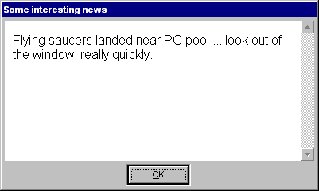

... every admin's dream I'd say ;)
Well, what would you do to prevent your users to logon to a computer while you
do some non-interactive remote administration/updating/software installation?
Now? There's only one chance: turn off that Netlogon service on the domain server(s).
... but no more. Maintenance mode comes to your help. Just switch on maintenance mode
on the machine and users will be denied logon and shown a customizable message. Only
admins will be allowed to logon. It does not matter here, whether the admin is a local
one or a domain- or forest-global one.
The message shown is fully customizable and presented in a dialog similar to the news dialog:

Actually you can put anything the Internet Explorer of Windows would show. This GINA
actually uses the IE engine to render the content. Anyway, just this would be too open
when showing users any content. You should limit the links in the document shown to
the absolutely necessary! AgreementGINA2 already takes measures to not allow any protocols
but the internal about:blank, the also-internal res:// and the
http:// protocols. Downloads are not being allowed - imagine someone could
overwrite your system files while acting as SYSTEM - horrible! So all this is very
restrictive already, but the links in the agreement document decide whether the user is
given the chance to break "out of the box".
You can either give standard local pathes to HTML files, you can give remote URIs/URLs
(e.g. on the domain server) or you can directly enter HTML content. Note, that the
title of the document defines the title of the dialog!